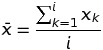

Simple Statistics
Let the following data set be given (sample size 60):
4, 3, 2, 5, 4, 6, 3, 7, 4, 1, 4, 0, 6, 4, 3, 5, 2, 3, 5, 1, 4, 4, 9, 5, 4, 3, 3, 5, 2, 4, 3, 6, 5, 2, 6, 2, 4, 5, 5, 1, 5, 4, 4, 2, 7, 1, 3, 3, 4, 7, 3, 4, 4, 6, 6, 3, 3, 2, 6, 1.
Calculate:
- The mean
- The mean recursively
- The standard deviation over the sample
The calculation of the mean and the standard deviation of a list of numbers is fairly straightforward.

import math
numbers = [4, 3, 2, 5, 4, 6, 3, 7, 4, 1, 4, 0, 6, 4, 3, 5, 2, 3, 5, 1, 4, 4, 9, 5, 4, 3, 3, 5, 2, 4, 3, 6, 5, 2, 6, 2, 4, 5, 5, 1, 5, 4, 4, 2, 7, 1, 3, 3, 4, 7, 3, 4, 4, 6, 6, 3, 3, 2, 6, 1]
# calculate mean
mean = sum(numbers) / len(numbers)
# calculate std dev
std_dev = math.sqrt(
sum([(x - mean)**2 for x in numbers])
/ len(numbers)
)
print('Sample mean : %0.2f' % mean)
print('Sample std dev : %0.2f' % std_dev)
Sample mean : 3.87
Sample std dev : 1.77
However, in streaming environments, x is unbounded, which makes it necessary to calculate these simple statistics incrementaly.
To incrementally calculate the mean and standard deviation of a random variable x, we need to maintain three variables for x:
- LS (Linear Sum)
- SS (Squared Sum)
- N (Count)
This allows observations to be incrementally added.
- LS = LS + xi
- SS = SS + xi2
- N = N + 1
As shown below, these three variables and their incremental additive properties are sufficient to calculate the mean and standard deviation of x in a streaming environment.
class Stream:
def __init__(self):
self.ls = 0.0
self.ss = 0.0
self.n = 0.0
def increment(self, x):
"""
Add x to the observations by incrementing the sufficient stats
"""
self.ls += x
self.ss += x**2
self.n += 1
def decrement(self, x):
"""
Remove x from the observations by decrementing the sufficient stats
"""
self.ls -= x
self.ss -= x**2
self.n -= 1
def mean(self):
"""
Return mean of the observations by dividing LS by N
"""
return self.ls/self.n
def std_dev(self):
"""
Return the standard deviation of the observations
"""
return math.sqrt((self.ss/self.n) - (self.ls/self.n)**2)
def print_stats(self):
"""
Print the current values of the sufficient stats to the console
"""
print('Linear Sum : %0.2f' % self.ls)
print('Squared Sum : %0.2f' % self.ss)
print('N : %0.2f' % self.n)
The mean can be calculated by:
And the standard deviation can be calculated by:

Below, we are incrementally adding three numbers to the sample, and calculating the mean and standard deviation of the observations in the stream
stream = Stream()
stream.increment(4)
stream.increment(3)
stream.increment(2)
stream.print_stats()
print()
print('Mean: %0.2f' % stream.mean())
print('Standard Deviation: %0.2f' % stream.std_dev())
Linear Sum : 9.00
Squared Sum : 29.00
N : 3.00
Mean: 3.00
Standard Deviation: 0.82
Coming back to the original sample of 60 items:
4, 3, 2, 5, 4, 6, 3, 7, 4, 1, 4, 0, 6, 4, 3, 5, 2, 3, 5, 1, 4, 4, 9, 5, 4, 3, 3, 5, 2, 4, 3, 6, 5, 2, 6, 2, 4, 5, 5, 1, 5, 4, 4, 2, 7, 1, 3, 3, 4, 7, 3, 4, 4, 6, 6, 3, 3, 2, 6, 1.
Below, the items are incrementally added to the stream by updating the sufficient statistics, then the mean and standard deviation are printed.
stream = Stream()
for number in numbers:
stream.increment(number)
stream.print_stats()
print()
print('Mean: %0.2f' % stream.mean())
print('Standard Deviation: %0.2f' % stream.std_dev())
Linear Sum : 232.00
Squared Sum : 1086.00
N : 60.00
Mean: 3.87
Standard Deviation: 1.77